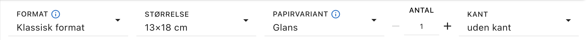

- Gå til følgende link: pixum.dk
- Klik på "FREMKALD DINE BILLEDER"
- Upload og vælg billederne fra din computer
-
Øverst på siden finder du nogle indstillinger. Vælg følgende:
- FORMAT: Klassisk format
- STØRRELSE: 13x18 cm (eller anden ønsket)
- PAPIRVARIANT: Glans
- ANTAL: 1 stk (dette er hvor mange der bestilles af hvert billede, og ikke det samlet antal)
- KANT: Uden kant
Indstillingerne burde se sådan ud her:

Nu mangler du bare at klikke "LÆG I INDKØBSVOGNEN" og betale for billederne.
I kassen skal der sættes flueben ved “Automatisk billedoptimering (DPO)”, så bliver billederne i den bedst mulige kvalitet.
I kassen skal der sættes flueben ved “Automatisk billedoptimering (DPO)”, så bliver billederne i den bedst mulige kvalitet.